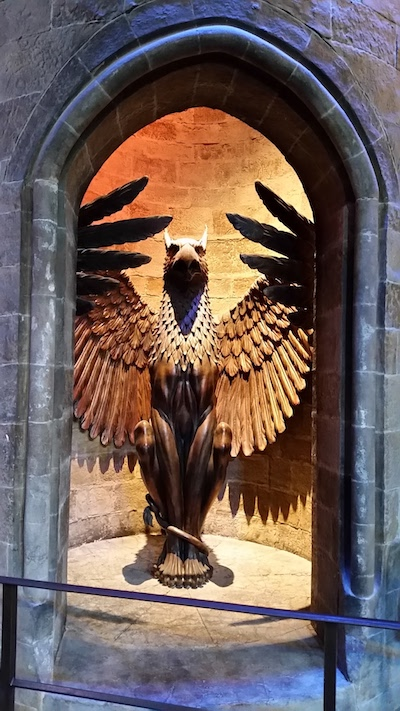
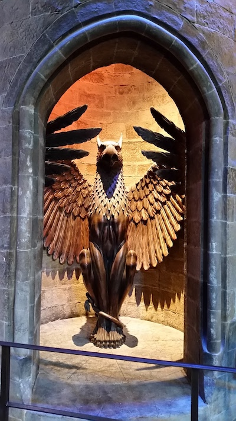

When we went to London, contrary to how it usually is, it was very sunny! My family and I went many places in London, and visited many famous landmarks. London is trendy, posh, historical, and diverse.
The first thing we did in London was visit the Tower Bridge. Connected to the Tower Bridge is the Tower of London Castle, which we went inside of.
After this, we then walked over to the nearby HMS Belfast Boat. Built for Royal Navy, the HMS Belfast was a surviving boat of World War II. It has 9 different decks, filled with cool information about what life was like on this boat.
We then went on a boat cruise on the River Thames to reach Big Ben and the London Eye, both in Westminster. The Big Ben was under construction at the time, but it was fabulous to see such a huge and tall clock right in front of my eyes. The London Eye is the fifth-tallest Ferris wheel in the world, being 135 feet.
Once we got off the boat, we walked to Buckingham Palace, the main house of Queen Elizabeth II (and the corgis). There were the palace guards keeping watch outside in their uniforms as well.
To start off Day 2, we went to Convent Gardens, which is a very charming community, yet city-like as well. While we were there, we visited the London Transport Museum.
After the London Transport Museum, we took an overground sightseeing bus to St. Paul's Cathedral. It was much bigger than I thought it was going to be, and it had many stunning designs on the interior and exterior. It has a dome on the top, and there are two columns on the sides. In the underground crypt, many famous people are buried, such as the Duke of Wellington and Sir Alexander Fleming. We went up the stairs all the way to the dome at the top of the cathedral. I advise any of you who plan to do this: 1. You can't be afraid of heights, 2. Wear closed-toed shoes, 3. Be ready to climb up 528 steps. Once we got up to the top, we could see down on a lot of London, it was really awesome!

We then took the London Underground (the tube) to Kensington Palace. Kensington Palace is truly beautiful on the inside and the outside. We got to take a tour of the interior, where we saw different rooms and Lady Di (Diana, Princess of Wales)'s most famous dresses. When we went outside, we found a maze connected to a lovely garden. There is also a statue of Queen Victoria in front of the palace.
Day 3 was dedicated to visiting Windsor Castle, which was farther out from the city (we were staying near the Euston underground station, we had to take the subway a couple of times to get to a main station, then we had to take two different overground trains to get to the area where Windsor Castle is, which is in the English countryside of Windsor). It was in a quaint little town, dotted with restaurants and cute shops. The castle itself contained a church and a guard room, along with all the other bedrooms, living rooms, etc. After exploring the castle we went outside to watch their "Changing of the Guard" ceremony. This including a band playing a whole song as well. Afterwards, we went to a nearby cafe and had fish n' chips.
We spent all of day 4 at the "Making of Harry Potter" studios. This was such a cool experience because I'd previously watched all the Harry Potter movies, so seeing all the props and techniques used was amazing. We saw things such as Harry Potter's cupboard under the stairs, the great hall, the train station, etc. You can see all the things that I saw in the pictures that I took below. I highly recommend this to any who is a Harry Potter fan.
 

Our time in London ended here.